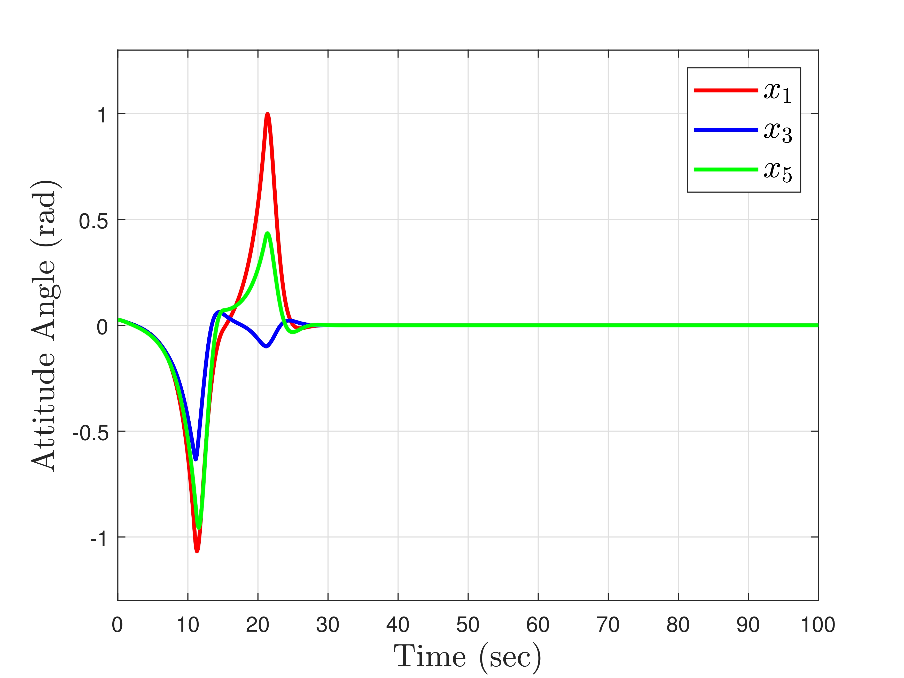
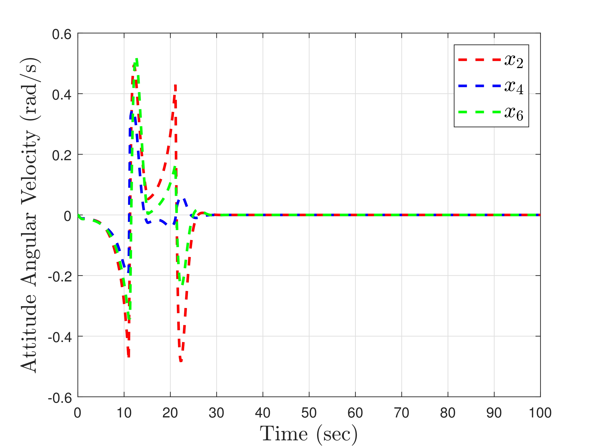
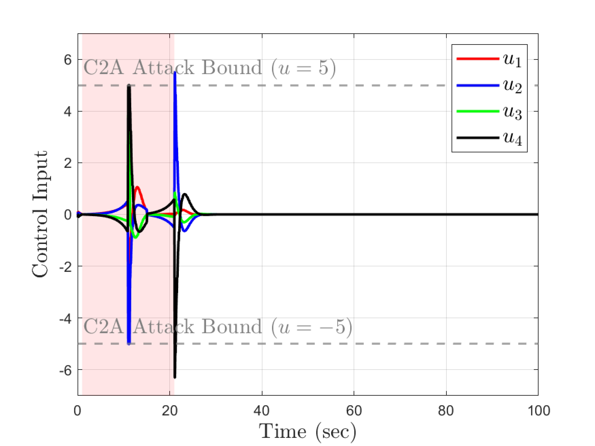
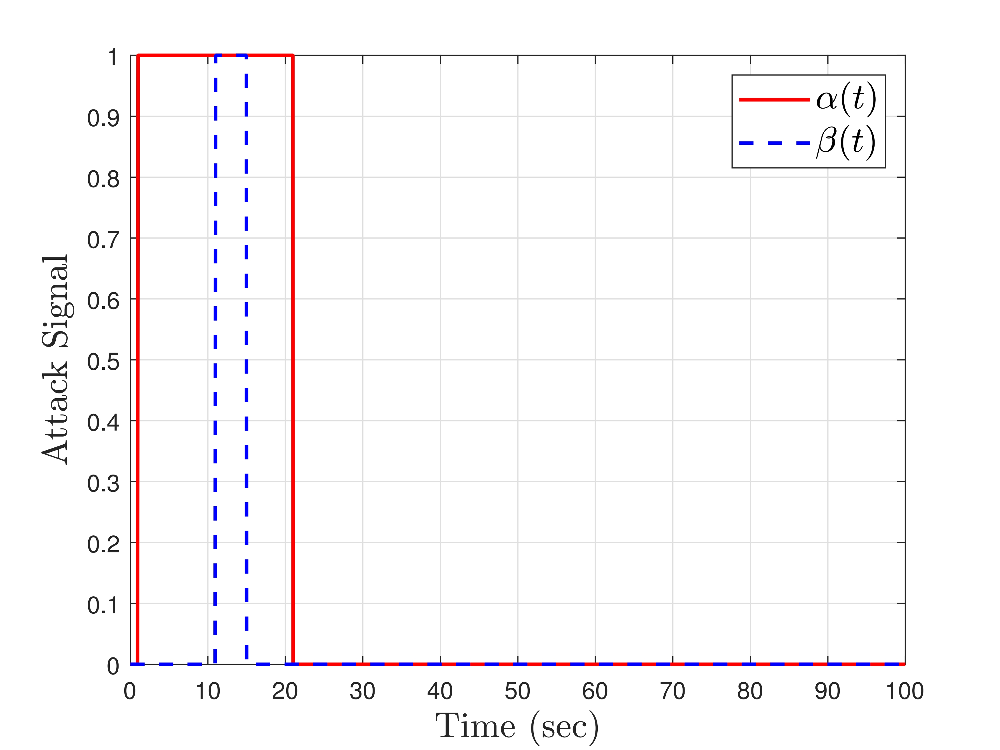

An Interval Type-2 (IT2) Fuzzy Attitude Control is designed to maintain stable flight for Unmanned Aerial Vehicles (UAVs) with parametric uncertainties, even under the threat of hybrid cyberattacks.




@article{kim202Xinterval,
author = {Kim, Taejin and Tak, Taewoo and Yoo, Donghan and Han, Seungyong},
title = {Interval Type-2 Fuzzy Attitude Controller Design for Uncertain UAVs under Hybrid Cyberattacks via a Generalized Set-Inclusion Lemma},
year = {202X}
url = {https://github.com/Control-HAN/UAV-IT2Fuzzy-Control}
}